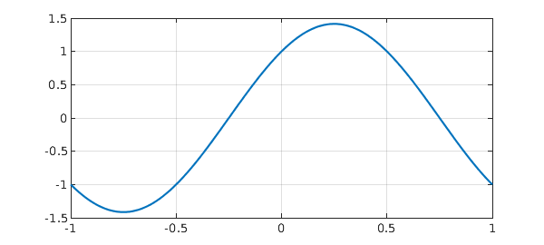

Here, we solve three simple linear problems considered in the Wikipedia article on ODEs [1]. The problems are solved in the order they appear in the article, with boundary conditions imposed to make the solutions unique.
Problem 1: Second-order problem
$$ L(y) = y'' - 4y' + 5y = 0, \quad y(-1) = e^{-2} \cos(-1) , ~~ y(1) = e^2\cos(1). $$
Begin by defining the domain $d$, chebfun variable $x$ and operator $N$.
d = [-1 1];
x = chebfun('x',d);
N = chebop(d);
The problem has Dirichlet boundary conditions.
N.lbc = exp(-2)*cos(-1); N.rbc = exp(2)*cos(1);
Define the linear operator.
N.op = @(y) diff(y,2) - 4*diff(y,1) + 5*y;
Define the right-hand side of the ODE.
rhs = 0;
Solve the ODE using backslash.
y = N\rhs;
Analytic solution.
y_exact = exp(2*x).*cos(x);
How close is the computed solution to the true solution?
norm(y-y_exact)
ans =
2.237284085109215e-13
Plot the computed solution.
plot(y,'linewidth',2), grid on

Problem 2: Simple harmonic oscillator
$$ L(y) = y'' + \pi^2 y = 0, \qquad y(-1) = -1, ~~ y'(1) = -\pi. $$
d = [-1 1];
x = chebfun('x',d);
N = chebop(d);
N.op = @(y) diff(y,2) + pi^2*y;
This problem has a Dirichlet boundary condition on the left,
N.lbc = -1;
and a Neumann condition on the right.
N.rbc = @(u) diff(u) + pi;
Define the right-hand side of the ODE.
rhs = 0;
Solve the ODE using backslash.
y = N\rhs;
Analytic solution.
y_exact = cos(pi*x)+sin(pi*x);
How close is the computed solution to the true solution?
norm(y-y_exact)
ans =
2.731864025127892e-14
Plot the computed solution.
plot(y,'linewidth',2), grid on

Problem 3: First-order problem
$$ L(y) = y' + 3y = 2 \qquad y(0) = 2 . $$
d = [0 1];
x = chebfun('x',d);
N = chebop(d);
First-order problems require only one boundary condition.
N.lbc = 2;
Define the linear operator.
N.op = @(y) diff(y) + 3*y - 2;
Define the right-hand side of the ODE.
rhs = 0;
Solve the ODE using backslash.
y = N\rhs;
Analytic solution, usually found with integrating factors.
y_exact = 2/3 + 4/3*exp(-3*x);
How close is the computed solution to the true solution?
norm(y-y_exact)
ans =
1.567738394778723e-15
Plot the computed solution
plot(y,'linewidth',2), grid on